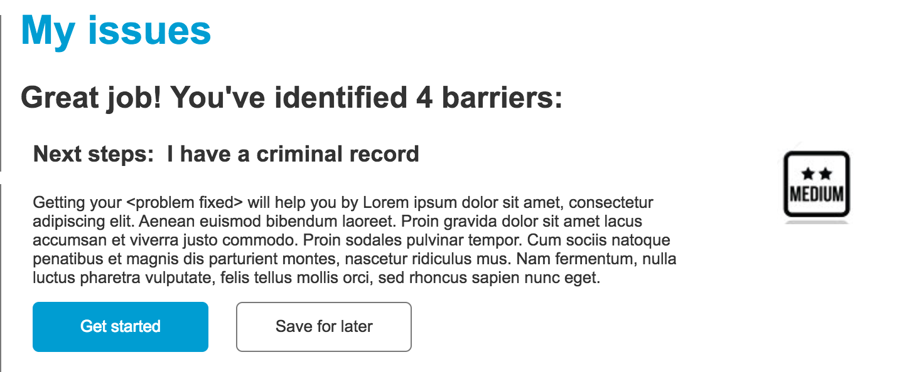

Toolbox Content Type¶
Toolboxes are attached to portals and tools are attached to toolboxes.
A toolbox must contain:
- A title
- A reference to an existing portal. Create the portal page first
- A content description, limited to 200 characters for use on the website.
- A meta description, limited to 300 characters for use on social media and in SERPs
- Purpose description, selector form label, and overall level of effort. These are used in a webform on the portal page to help the user select which toolboxes in a portal apply to them.
- Purpose description - text that displays on the webform results page. Purpose descriptions should begin with “Getting your [x] will help you by [y]”
- Overall level of effort - easy, medium or hard. The guideline here is how long it takes and whether a court appearance is required. Select “easy” if the user can complete most of the issues in 1-3 days; select “medium” if the issues generally don’t require a hearing and can be completed in 7-14 days; select “hard” if the issues generally require a hearing or take longer than 14 days to complete.
- Selector form label - this appears on the webform itself next to a checkbox for the user to pick.
- A yes/no to encourage the user to seek legal help. This will display a standard block encouraging the user to use Get Legal Help. Defaults to yes when the overall level of effort is hard.

The image above displays the purpose description and level of effort on the evaluator confirmation page.

The image above is the evaluator form for the Ready to Work portal. Each toolbox in the portal is represented by a single checkbox and label. The label is pulled from the Selector form label.
A toolbox page will always contain a form to select tools within the toolbox but may also have additional page components, such as text blocks, as well. The page components field allows us to add those components.